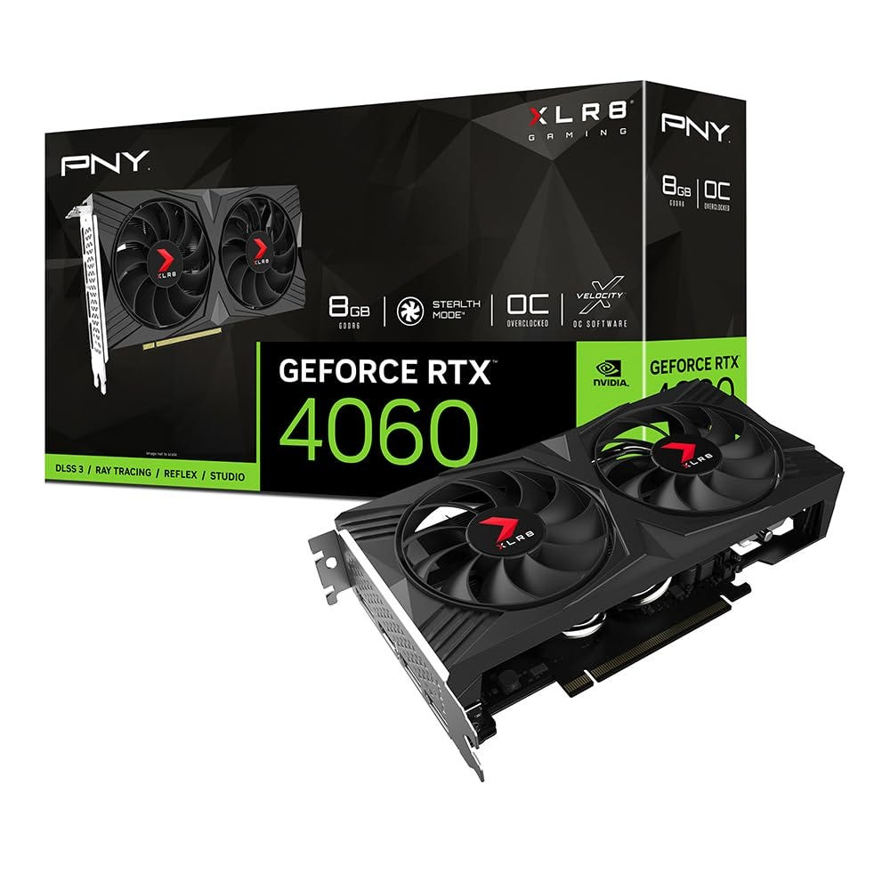
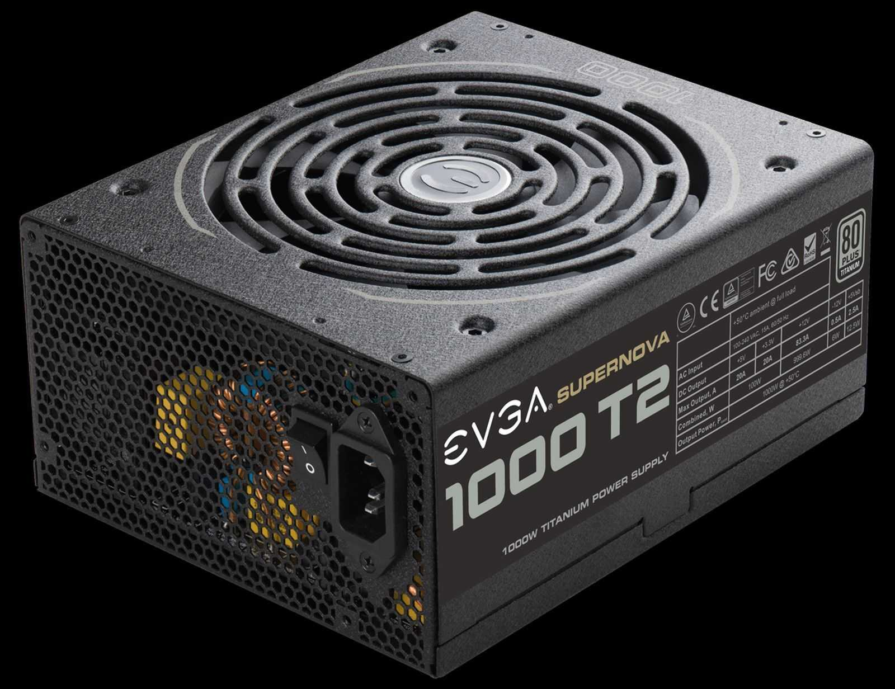
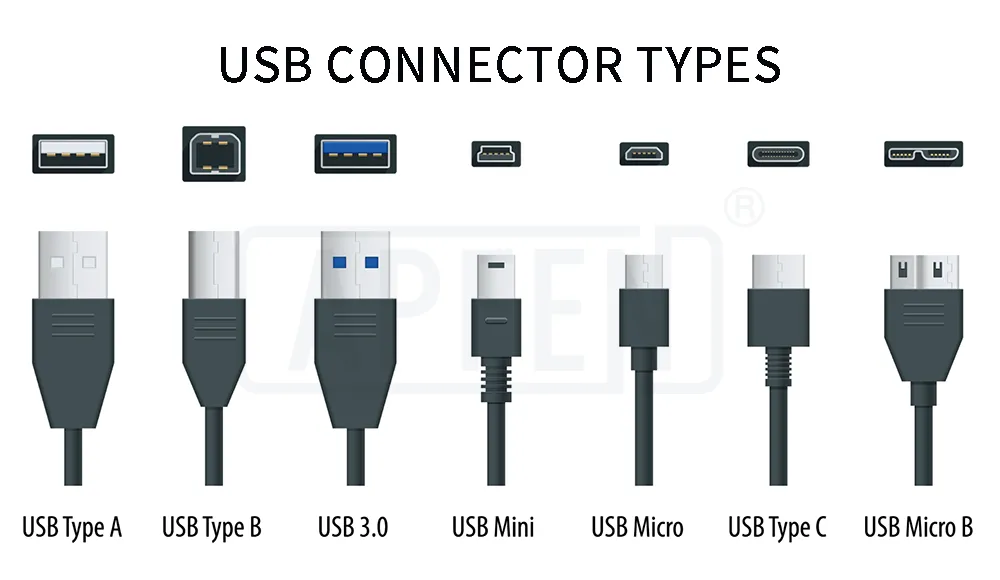
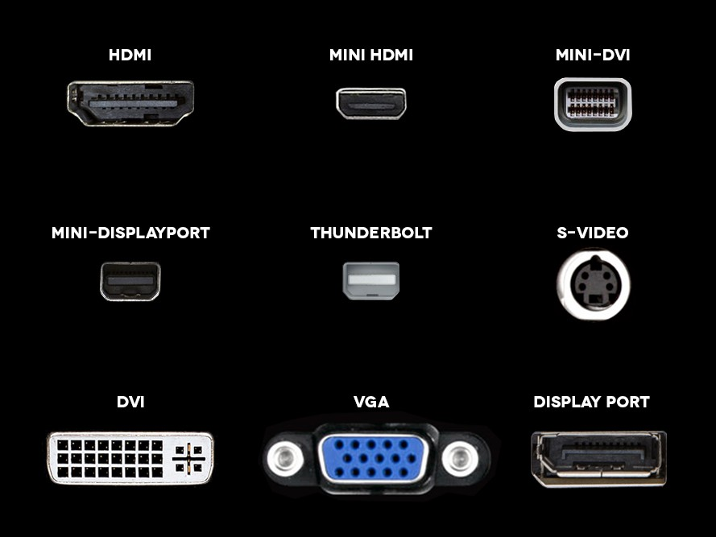
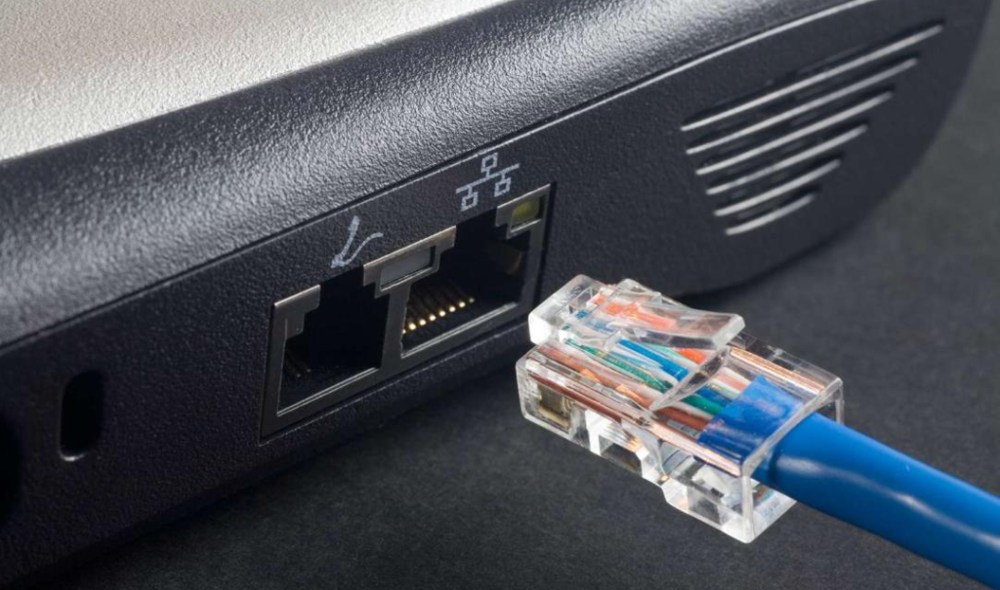
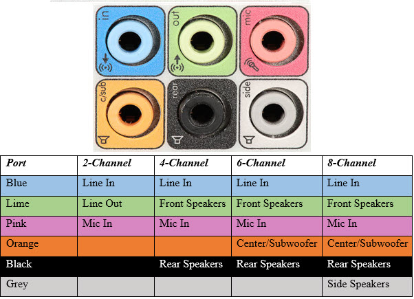
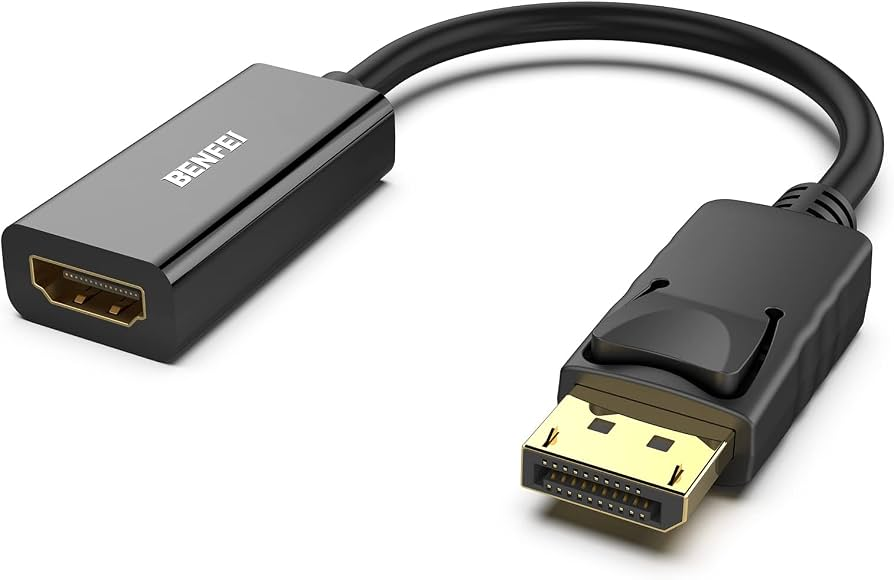
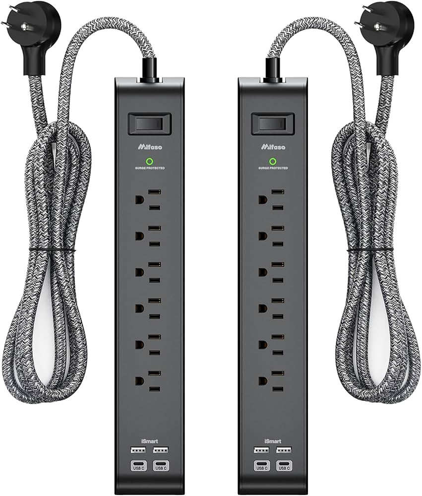
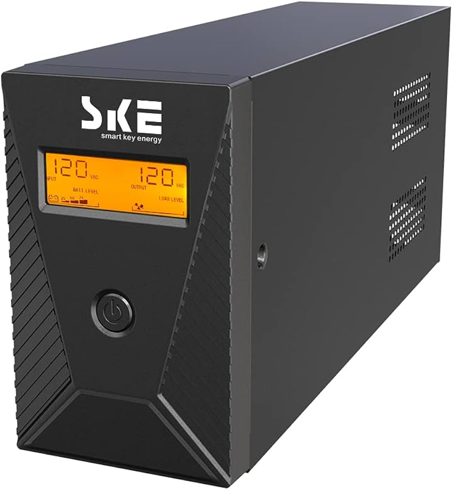

Dedicated GPU (Graphics Processing Unit):
GPUs beyond gaming:
Practical takeaways:






In-Class Exercise: Reading a Spec Sheet
Using what you've learned about CPUs, RAM, storage, graphics, and ports, decode the listing below:
Example Laptop
- CPU: Intel Core i5-1340P (12 cores, up to 4.6 GHz)
- RAM: 16GB DDR5
- Storage: 512GB NVMe SSD
- Graphics: Integrated Intel Iris Xe
- Ports: 2x USB-C (Thunderbolt 4), 1x USB-A, HDMI, 3.5mm audio jack
- Battery: Up to 12 hours
Questions:


UPS (Uninterruptible Power Supply):
Practical takeaways: